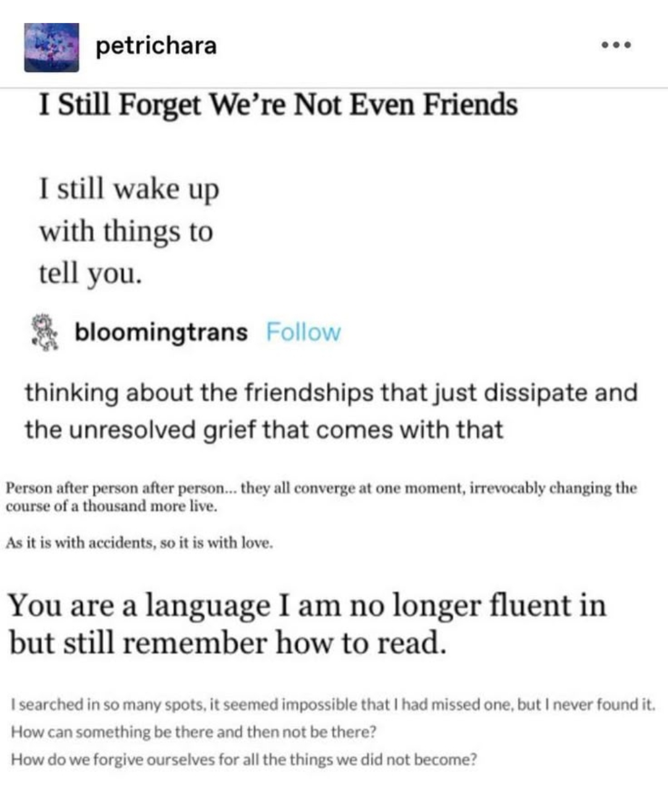

Everybody’s Worried About Owen has a song I like titled “How Do You Talk To A Star?” This post is a little bit about how I interpreted it, noting that listening to song for the first time, often without lyrics, makes you hear different things, and this can lead to neat things happening.
Before looking up the lyrics, to me, the song was about an ex.
It’s funny how you spent the days \
Being a beacon for me and my hopscotch plays \
I got a desk drawer full of letters that I never sent you ‘cause you were just too far away \
It goes on and on, painting pictures, scenes, memories, of a time well spent. To me, the breakup might have been amicable, mutually beneficial, or at least there are no lingering negative emotions that are able to over-power the nostalgia this song instills.(sidenote:1Maybe there were negatives, there’s always some, but singing this, right in this moment, we are thinking about the good times.)
We sing about memories of “White boots and a tongue that’s feeling extra dry,” of “Something caught in your teeth, a smile bigger than Andromeda,” of “Ruddy cheeks as I look up at the estate in my head that you founded.” The ex lives in our mind rent free.
And this is where the mishearings start being real fun.
Without having the lyrics, the ambiguities of English language in song cause me to hear the end of the song as this:
and I never paid for the baseball cap \
The bowling alley at midnight, cheap beer on tap \
And you are a lithograph, sketching my history \
Under the floodlights, you look more like God to me \
I forget the way you(sidenote:2Or “to,” depending on how I was feeling—they sound similar enough.) talk \
Three shots of tequila, the speed you’re walkin’ \
And I guess what I’m trying to say here is thank you \But I go \
Cold \
Rent free indeed, we sing that we “never paid,” that is, we never regretted, never suffered from having and having memories of the baseball cap, the shit beer, the dates and outings and experiences together.
We sing that maybe we are forgetting some things as time places distance between us (“I forget the way you talk, [the] three shots of tequila, the speed you’re walkin’”), and this makes me feel sad. The song is bittersweet, this is an ex-partner and not a partner, after all. Or maybe I hear “you” as “to,” and the line becomes “I forget the way to talk,” continuing to regale the awe we have at you. Either way, both sentiments are true, in this line and throughout the song. Thank you. Thank you, for being a part of my life, in all the ways. It was a good time.
Anyways, the actual stanza is this:
and I never looked back for the baseball cap \
The bowling alley at midnight, shit beer on tap \
And you are a lithograph, sketching my history \
Under the floodlights, you look more like God to me \
You’re way too fucked up, you’re way too tough \
Three shots of tequila to speed you up \
And I guess what I’m trying to say here is thank you \
It’s a bit different, isn’t it? That’s pretty cool, and probably lends itself to some kind of slightly alternative-universe interpretation. Forgetting something as simple as how someone walks, when you were once so close, is pretty ouch. See appendix.
I also went to a concert of Owen’s and I think he said the song, to him, was about new people that you’re in awe of, instead of old? So it’s real cool that media, art, can create these really different interpretations. The contents of the story is locked in time, but they spawns infinitely possible alternate universes when observed.(sidenote:3Uhh mumble mumble heisenberg?)
I like this song, I like midwest emo. This song is tied to my university freshman experience, temporally and in a feelings sense, and it holds a special place in my heart, or whatever. So this is pretty cool.
As an addendum or appendix, here’s a moodboard of sorts of what this song is like to me:

Click for image transcription
A screenshot of a tumblr post where the author is cropped out. The first part is a screenshot that reads: Lack of Ritual in Friendship Breakups. Unlike the structured process of ending romantic relationships, the conclusion of friendships often lacks a formalized ritual. Closure may elude, leaving individuals grappling with ambiguity and unresolved emotions.
Then, the post author includes some tags. #this ones meant to be a goodbye to one very specific person. #im sorry. i hope youre happy #i cant apologize cos i will cut my hand off before i reach out to you again. i hope youre happy. i hope you never read this.
Finally, there is an image of two wooden mannequins, ones that might be used in posing references for artists, sitting on two chairs, chairs touching but facing away from each other. The caption reads: You are a better knife than you are a person.
Click for image transcription
A tumblr post by petrichara includes three screenshots.
The first is of a poem titled I Still Forget We’re Not Even Friends. It is: I still wake up (linebreak) with things to (linebreak) tell you.
The second is a tumlbr post by bloomingtrans. It reads: thinking about the friendships that just dissipate and the unresolved grief that comes with that. It then itself includes a screenshot reading: Person after person after person… they all converge at one moment, irrevocably changing the course of a thousand more live. As it is with accidents, so it is with love.
The third is: You are a language I am no longer fluent in but still remember how to read. I searched in so many spots, it seemed impossible that I had missed one, but I never found it. How can something be there and then not be there? How do we forgive ourselves for all the things we did not become?